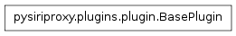

The plugin module contains the BasePlugin class which provides the base functionality from which all plugins will inherit.

The BasePlugin class encapsulates the basic features of a plugin. This class provides the ability to load the set of filter functions, and then process them with a received object and an received direction.
A filter function is created by decorating a class function with either the From_iPhone decorator, or the From_Server decorator. These filters will be processed in the event that an object is received from the given decorated direction. These functions can have any publicly visible name (i.e., do not start with __).
Example:
def Plugin(BasePlugin):
@From_iPhone
def exampleFilter(self, obj):
self.log.debug("This will process all iPhone objects!")
Filter functions can also be created to catch a specific object type by using specific object class decorators. The object class decorators are defined in the objectClasses module.
Example:
def Plugin(BasePlugin):
@StartRequest
@From_iPhone
def exampleFilter(self, obj):
self.log.debug("This will process iPhone StartRequest objects!")
In the above example, the exampleFilter function will be called in the event that a StartRequest object is received from the iPhone. Custom decorators can be created by calling the objectClasses.createDecorator() function.
Speech rules are created in a similar manner to object filters. Two decorators exist which allow a speech rule function to be called in the event that a given string matches the recognized speech, or if a regular expression matches the recognized speech.
Example:
def Plugin(BasePlugin):
@matches("Test Siri Proxy")
def testMatch(self, text):
print "Matched the recognized speech!"
@regex(".*Siri Proxy.*")
def testRegex(self, text):
print "Matched a regular expression!"
The @matches decorator takes a string which it will compare to the recognized speech. A function using this decorator will be called in the event that the recognized speech matches the given string (it is case insensitive).
The @regex decorator takes a regular expression which will use to match the recognized speech. A function using this decorator will be called in the event that the regular expression matches the recognized speech (it is case insensitive).
Custom speech rule decorators can be created by creating a subclass of the speechRules.Rule class, and then calling the speechRules.createDecorator() function with the speechRules.Rule subclass.
Command Siri to ask the user a question.
Complete a request to Siri.
Note
This function should always be called by speech rules otherwise Siri will continue to spin.
Create a default object filter for the start request command received from the iPhone. This allows the plugins to define a set of custom command names and map them to specific callback functions.
The customCommandMap property defines a dictionary of custom command names mapped to the concrete plugin class function names that get called when the custom command is received from the iPhone.
Called after the BasePlugin is created.
Note
This function can be overridden by concrete plugins.
Create a view and send it to the iPhone user.
Process the filters for this Plugin.
Note
This function should return False if the object should be dropped, return None if the object is ignored by this filter, or return the new object corresponding to the response.
Process all of the speech rules for the recognized speech text.
Command Siri to speak a piece of text.
Create a directions object and display it to the iPhone user.
Create driving directions object and display it to the iPhone user.